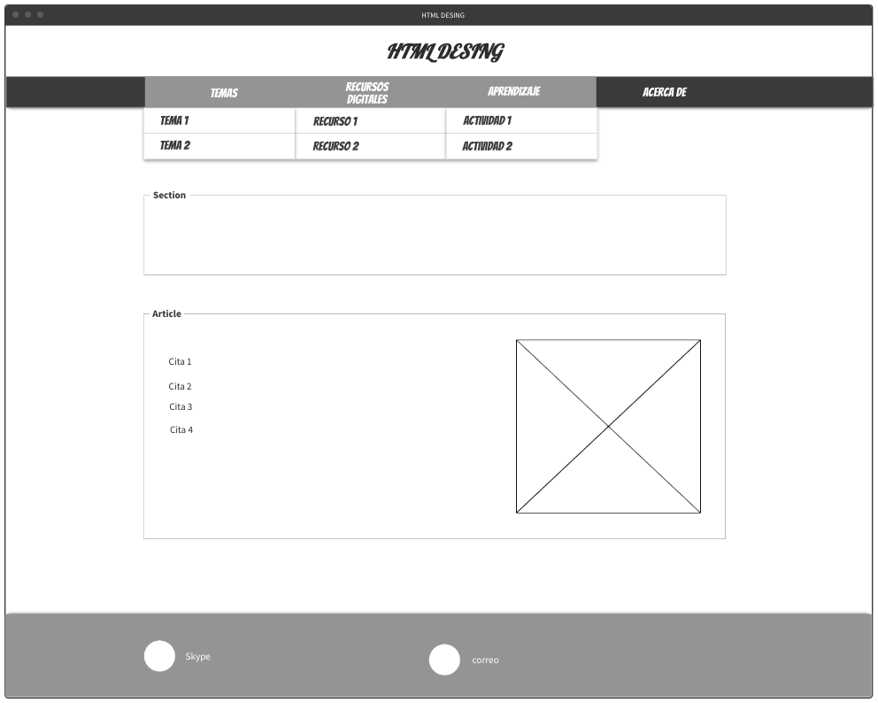

Flex Box, CSS Grid
Flexbox y CSS Grid son dos módulos de diseño CSS que se han convertido en la tendencia principal durante los últimos años. Ambos nos permiten crear diseños complejos que antes sólo eran posibles mediante la aplicación de trucos con CSS y/o JavaScript. Flexbox y CSS Grid comparten múltiples similitudes y se pueden resolver muchos diseños con ambos. Sin embargo, cuándo usarlos, es otra pregunta.
CSS Grid Layout (también conocido como “Grid”), es un sistema de diseño bidimensional basado en cuadrículas que tiene como objetivo nada menos que cambiar completamente la forma en que diseñamos interfaces de usuario basadas en cuadrículas. CSS siempre se ha utilizado para diseñar nuestras páginas web, pero nunca se ha hecho un buen trabajo. Primero, usamos tablas, luego flotantes, posicionamiento y bloque en línea, pero todos estos métodos fueron esencialmente trucos y dejaron fuera una gran cantidad de funciones importantes (centrado vertical, por ejemplo). Flexbox ayudó, pero está diseñado para diseños unidimensionales más simples, no complejos bidimensionales (Flexbox y Grid funcionan muy bien juntos). Grid es el primer módulo CSS creado específicamente para resolver los problemas de diseño que todos hemos estado pirateando durante el tiempo que llevamos creando sitios web.
El Flexbox Layoutmódulo (Caja flexible) ( una recomendación candidata del W3C a octubre de 2017) tiene como objetivo proporcionar una forma más eficiente de diseñar, alinear y distribuir el espacio entre los elementos en un contenedor, incluso cuando su tamaño es desconocido y / o dinámico (por lo tanto, el palabra "flex").
La idea principal detrás del diseño flexible es darle al contenedor la capacidad de alterar el ancho / alto (y el orden) de sus elementos para llenar mejor el espacio disponible (principalmente para adaptarse a todo tipo de dispositivos de visualización y tamaños de pantalla). Un contenedor flexible expande los artículos para llenar el espacio libre disponible o los encoge para evitar que se desborden.

referencias
Celaya Luna, A. (2014). Creación de páginas web: HTML 5 (pág. 1 a 60). Recuperado de https://elibro-net.bibliotecavirtual.unad.edu.co/es/ereader/unad/56045
i Saltiveri, T. G. (2012). Diseño de sistemas interactivos centrados en el usuario. Editorial UOC. (Pág. 211 a 264). Recuperado de https://elibro-net.bibliotecavirtual.unad.edu.co/es/ereader/unad/56326?page=212
Ochoa Torres, J. (04,12,2018). O.V.I. SCV – Sistema Controlador de Versiones. [Archivo de Video]. Recuperado de http://hdl.handle.net/10596/22592